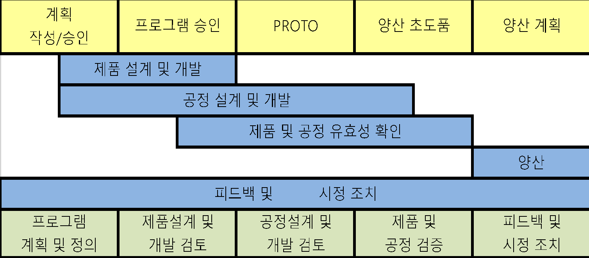
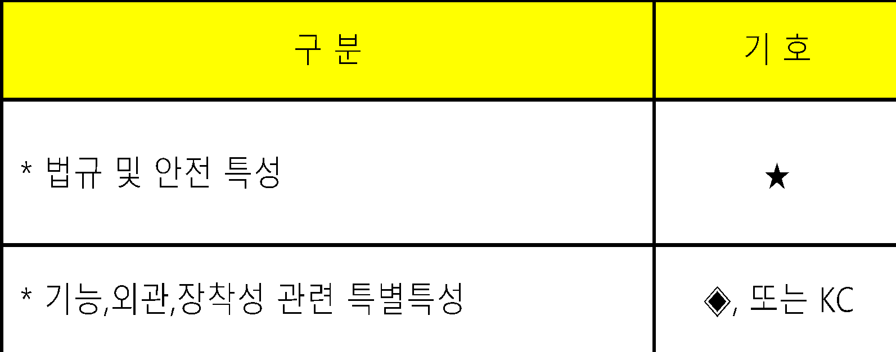
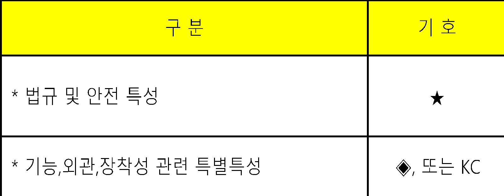

| 개발관리 프 로 세 스 | 문서번호 | ||||||||||||||||||||||||||||||||||||||||||
| QC 공정도 관리 지침서 | MI-0803 | ||||||||||||||||||||||||||||||||||||||||||
| 작 성 팀 | 발 행 팀 | 제 정 일 자 | 작성 | 검토 | 승인 | ||||||||||||||||||||||||||||||||||||||
| 품질팀 | 품질팀 | 2025-05-28 | 결재完 | 결재完 | 결재完 | ||||||||||||||||||||||||||||||||||||||
| NO | 개 정 일 자 | 개 정 사 유 | 개 정 쪽 | 비 고 | |||||||||||||||||||||||||||||||||||||||
| 0 | 2025-05-28 | ||||||||||||||||||||||||||||||||||||||||||
| 1 | |||||||||||||||||||||||||||||||||||||||||||
| 2 | |||||||||||||||||||||||||||||||||||||||||||
| 3 | |||||||||||||||||||||||||||||||||||||||||||
| 4 | |||||||||||||||||||||||||||||||||||||||||||

| QC 공정도 관리 지침서 | 문서 번호 | MI-0803 | |||||||||||||||||||||||||||||||||||||||||
| 쪽 | 1 | ||||||||||||||||||||||||||||||||||||||||||
| 제정 일자 | 2025.05.28 | 개정 번호 | 1 | 개정 일자 | 2025.05.28 | 시행일자 | #VALUE! | ||||||||||||||||||||||||||||||||||||
| 1. 용어의 정의 | |||||||||||||||||||||||||||||||||||||||||||
| 1.1 QC 공정도 | |||||||||||||||||||||||||||||||||||||||||||
| 제품 및 공정의 중요한 특성 및 엔지니어링 요구사항을 포함하여 부품과 공정을 | |||||||||||||||||||||||||||||||||||||||||||
| 관리하는 시스템으로서 공급자에 의해 작성된 문서를 말한다. | |||||||||||||||||||||||||||||||||||||||||||
| 1.1.1 시작품 QC 공정도 | |||||||||||||||||||||||||||||||||||||||||||
| 시작품 제작 중에 발생하는 치수측정, 자재 및 성능 시험을 기술하는 QC 공정도 | |||||||||||||||||||||||||||||||||||||||||||
| 를 말한다. | |||||||||||||||||||||||||||||||||||||||||||
| 1.1.2 양산초도품 QC 공정도 | |||||||||||||||||||||||||||||||||||||||||||
| 시작품 제작후 양산전에 발생하는 치수측정, 자재 및 성능시험을 기술하는 관리 | |||||||||||||||||||||||||||||||||||||||||||
| 계획서를 말한다. | |||||||||||||||||||||||||||||||||||||||||||
| 1.1.3 양산품 QC 공정도 | |||||||||||||||||||||||||||||||||||||||||||
| 양산을 통하여 발생하는 제품/공정특성,공정관리,시험 및 측정시스템을 포괄적 | |||||||||||||||||||||||||||||||||||||||||||
| 으로 기술하는 QC 공정도를 말한다. | |||||||||||||||||||||||||||||||||||||||||||
| 2. 책임과 권한 | |||||||||||||||||||||||||||||||||||||||||||
| 2.1 경영층 | |||||||||||||||||||||||||||||||||||||||||||
| 2.1.1 시작품 QC 공정도, 양산 초도품 QC 공정도 작성/승인 | |||||||||||||||||||||||||||||||||||||||||||
| 2.1.2 양산품 QC 공정도 작성/승인 | |||||||||||||||||||||||||||||||||||||||||||
| 2.2 각 부서장 및 담당자 | |||||||||||||||||||||||||||||||||||||||||||
| QC 공정도 작성부서는 관련부서와 회의체(CFT)를 구성하여 QC 공정도를 | |||||||||||||||||||||||||||||||||||||||||||
| 작성 및 검토한다. | |||||||||||||||||||||||||||||||||||||||||||
| 3. 업무 처리 절차 | |||||||||||||||||||||||||||||||||||||||||||
| 3.1 제품품질 일정계획 | |||||||||||||||||||||||||||||||||||||||||||
| 관련부서장은 관련부서에 회의를 소집, 아래 도표를 참조하여 제품 품질의 일정 | |||||||||||||||||||||||||||||||||||||||||||
| 계획을 수립하고 그에 따른 진도 관리를 하여야 한다. | |||||||||||||||||||||||||||||||||||||||||||
| 3.2 QC 공정도의 구분 | |||||||||||||||||||||||||||||||||||||||||||
| 3.2.1 시작품 QC 공정도 | |||||||||||||||||||||||||||||||||||||||||||
| 품질팀은 당사에서 개발 참여하는 시작품의 도면, 제조 공정도, 유사 QC 공정도 | |||||||||||||||||||||||||||||||||||||||||||
| 로 3.3항에 따라 QC 공정도를 작성한 후 관련부서 담당자의 검토를 받고 부서 | |||||||||||||||||||||||||||||||||||||||||||
| 장의 승인을 득한 후 시작품 제작전에 관련부서등에 배포한다. | |||||||||||||||||||||||||||||||||||||||||||
| 3.2.2 양산초도품 QC 공정도 | |||||||||||||||||||||||||||||||||||||||||||
| (1) 품질팀은 도면,제조공정도,시작품 QC 공정도 등을 근거로 작성방법 3.3항에 따라 | |||||||||||||||||||||||||||||||||||||||||||
| QC 공정도를 작성한 후 관련부서 담당자의 검토를 거쳐 부서장의 승인을 득한 후 양산 | |||||||||||||||||||||||||||||||||||||||||||
| 초도품 생산전에 관련부서에 배포한다. | |||||||||||||||||||||||||||||||||||||||||||
| (2) 양산초도품 QC 공정도에 대한 고객의 요구가 있을 때 품질담당자는 QC 공정도를 | |||||||||||||||||||||||||||||||||||||||||||
| 고객에게 제출할 수 있다. | |||||||||||||||||||||||||||||||||||||||||||
| 3.2.3 양산품 QC 공정도 | |||||||||||||||||||||||||||||||||||||||||||
| (1) 품질팀은 도면,제조공정도,시작품 QC 공정도 등을 근거로 작성방법 3.3항에 | |||||||||||||||||||||||||||||||||||||||||||
| 따라 QC 공정도를 작성한 후 관련부서 담당자의 검토를 거쳐 부서장의 승인을 득한 | |||||||||||||||||||||||||||||||||||||||||||
| 후 양산 초도품 생산전에 관련부서에 배포한다. | |||||||||||||||||||||||||||||||||||||||||||
| (2) 양산품 QC 공정도에 대한 고객의 요구 또는 4M변경 등 발생시 품질팀은 | |||||||||||||||||||||||||||||||||||||||||||
| QC 공정도를 재작성하여 고객에게 제출하여야 한다. | |||||||||||||||||||||||||||||||||||||||||||
| (3) 제조팀장은 품질팀으로부터 통보 받은 양산품 QC 공정도의 내용을 작업표준 | |||||||||||||||||||||||||||||||||||||||||||
| 및 검사표준에 반영하고 작업자에게 교육을 시킨다. | |||||||||||||||||||||||||||||||||||||||||||
| (4) 품질팀장은 QC 공정도 작성시 고객의 지정양식이 있을경우에는 고객의 지정 | |||||||||||||||||||||||||||||||||||||||||||
| 양식에 따라 QC 공정도를 작성한다. | |||||||||||||||||||||||||||||||||||||||||||
| 3.3 QC 공정도 작성방법 | |||||||||||||||||||||||||||||||||||||||||||
| 3.3.1 단계 | |||||||||||||||||||||||||||||||||||||||||||
| 시작단계 및 양산단계를 구분한다. | |||||||||||||||||||||||||||||||||||||||||||
| 3.3.2 공정흐름도 | |||||||||||||||||||||||||||||||||||||||||||
| 공정순서에 따라 SUB,MAIN,업체 구분하여 표기한다. | |||||||||||||||||||||||||||||||||||||||||||
| 3.3.3 공정명 | |||||||||||||||||||||||||||||||||||||||||||
| 공정순서에 따라 공정명을 기록한다. | |||||||||||||||||||||||||||||||||||||||||||
| 3.3.4 설비명 | |||||||||||||||||||||||||||||||||||||||||||
| 해당 공정에 설비,계측장비,치공구명을 기록한다. | |||||||||||||||||||||||||||||||||||||||||||
| 3.3.5 관리항목(제품) | |||||||||||||||||||||||||||||||||||||||||||
| 도면 등에 기술된 부품,구성품,조립품의 특성 등을 기입한다. | |||||||||||||||||||||||||||||||||||||||||||
| 3.3.6 관리항목(공정) | |||||||||||||||||||||||||||||||||||||||||||
| 제품특성 하나에는 여러 개의 공정특성이 존재한다. | |||||||||||||||||||||||||||||||||||||||||||
| 3.3.7 특별특성 | |||||||||||||||||||||||||||||||||||||||||||
| (1) 특별특성 지정관리 | |||||||||||||||||||||||||||||||||||||||||||
| (1.1) 정의 : 법규 및 안전 또는 기능,외관,장착성등 제품품질에 핵심적 영향을 미치는 | |||||||||||||||||||||||||||||||||||||||||||
| 제품 및 공정의 특별하고 매우 중요한 특성으로 고객에 의해 지정된 것을 | |||||||||||||||||||||||||||||||||||||||||||
| 포함하여 제품/공정의 지식을 통해 공급자에 의해 선정된다. | |||||||||||||||||||||||||||||||||||||||||||
| 이 특별특성은 다른 특성과 달리 통계적공정관리(SPC)등 중점적인 관리가 | |||||||||||||||||||||||||||||||||||||||||||
| 요구된다. | |||||||||||||||||||||||||||||||||||||||||||
| (1.2) 해당문서 : 도면, 설계 및 공정FMEA, QC 공정도, 작업표준서등 | |||||||||||||||||||||||||||||||||||||||||||
| (1.3) 지정주관 : CFTeam | |||||||||||||||||||||||||||||||||||||||||||
| (1.4) 지정기호 | |||||||||||||||||||||||||||||||||||||||||||
| (1.5) 특별특성 지정 : 특별특성 지정항목 목록 참조 | |||||||||||||||||||||||||||||||||||||||||||
| 3.3.8 관리기준(규격) | |||||||||||||||||||||||||||||||||||||||||||
| 도면,사양서,검사기준서등 기술문서에 의거한다. | |||||||||||||||||||||||||||||||||||||||||||
| 3.3.9 관리기준(확인방법) | |||||||||||||||||||||||||||||||||||||||||||
| 측정시 필요로 하는 측정도구를 기입한다. | |||||||||||||||||||||||||||||||||||||||||||
| 3.3.10 관리기준(주기) | |||||||||||||||||||||||||||||||||||||||||||
| SAMPLE 크기 및 주기를 기입한다. | |||||||||||||||||||||||||||||||||||||||||||
| 3.3.11 관리기준(관리방안) | |||||||||||||||||||||||||||||||||||||||||||
| 관련 표준명 또는 적용 통계적 기법, 기타 공정관리의 구체적 요령을 기입한다. | |||||||||||||||||||||||||||||||||||||||||||
| 3.3.12 관리분담 | |||||||||||||||||||||||||||||||||||||||||||
| 관리방안을 주관 관리하는 부서에 체크한다. | |||||||||||||||||||||||||||||||||||||||||||
| 3.3.13 이상발생시 조치사항 | |||||||||||||||||||||||||||||||||||||||||||
| 이상 발생시 조치방법 및 요령등을 기입한다. | |||||||||||||||||||||||||||||||||||||||||||
| 3.4 양산품 QC 공정도의 개정 | |||||||||||||||||||||||||||||||||||||||||||
| 품질팀장은 다음과 같은 사항 발생시 QC 공정도를 검토후 검사기준서와 함께 제조공정도 | |||||||||||||||||||||||||||||||||||||||||||
| 또는 작업표준서를 (필요하다고 판단시)개정하고 개정절차는 작성과 동일한 절차에 따른다. | |||||||||||||||||||||||||||||||||||||||||||
| 3.4.1 설계 및 공정이 변경될 때 | |||||||||||||||||||||||||||||||||||||||||||
| 3.4.2 공정능력이 높을 때 | |||||||||||||||||||||||||||||||||||||||||||
| 3.4.3 고객이 보다 높거나 낮은 공정능력 또는 성능 요구사항을 요구할 수도 있다. | |||||||||||||||||||||||||||||||||||||||||||
| 이러한 경우, QC 공정도의 제품/작업표준서 관리 항목의 공차에 주석을 달아야 한다. | |||||||||||||||||||||||||||||||||||||||||||
| 5. 양식명 | |||||||||||||||||||||||||||||||||||||||||||
| QC 공정도 | |||||||||||||||||||||||||||||||||||||||||||
제품개발 추진 단계



| 구 분 | 기 호 | ||
| ★ | |||
| * 기능,외관,장착성 관련 특별특성 | ◈, 또는 KC |
| *공정도시기호작성방법 | ||||||||||||||
| 명 칭 | ||||||||||||||
| 가 공 | ○ | |||||||||||||
| 운 반 | ||||||||||||||
| 저 장 | △ | |||||||||||||
| ▽ | ||||||||||||||
| 검 사 | □ | |||||||||||||
| ‡ | ||||||||||||||
| 흐름선 | | | |||||||||||||